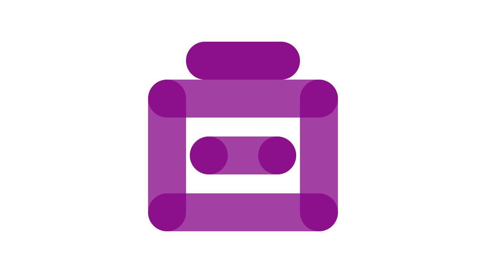

Building Comentsys Toolkits
Comentsys.Toolkit.Blazor is the latest toolkit that I have developed which offers Components that work with Blazor Server and or Blazor WebAssembly with the aim to see if it was possible, with the help of GitHub Copilot to port over controls that I had written for Windows to Blazor and was pleased to find that this was not only possible for controls I assumed would work just fine but for others that I hadn't expected to work and has proven popular with well over 130 downloads since it was published this month. It started with the Asset component which didn't need much help from GitHub Copilot which was to support making it easy to display the Asset Resource from my asset packages. Clock component was driven from an existing Windows component and thanks to a lot of prompting from GitHub Copilot and some manual work was able to get it work with a static time on Blazor Server and in real time for Blazor WebAssembly. Blazor WebAssembly supported a few controls I'd not expected to work but was able to port thanks to GitHub Copilot including Dial, Directional Pad and Directional Stick with a few enhancements compared to the original Windows controls. Components for both Blazor Server and Blazor WebAssembly included Donut and Sector which the sector was really helped with GitHub Copilot and was able to create the Donut component by hand. Finally, there are a couple of components leveraging an asset package of Comentsys.Assets.Display to show a static clock in seven-segment or five-by-seven dot-matrix displays for Blazor Server and show the real date and / or time in Blazor WebAssembly.
Comentsys.Toolkit.WindowsAppSdk is a package for Windows App SDK featuring many of the controls that inspired Comentsys.Tookit.Blazor to deliver controls such as Playing Card, Dice, Directional Pad and Directional Stick plus Piece as well as other useful functionality for integrating Windows Widgets. This toolkit started out as a way to share some of the controls that were based on work from my tutorials as well as some older controls such as Directional Pad and Directional Stick which were created for a cancelled Windows Phone project that I updated for Windows App SDK. It was great to be able to bring these together in the hope they may be useful. One key piece of functionality was the code needed from Microsoft to create Windows Widgets as when working with this it was quite difficult to put together and get it to work as there was a lot of native code and only a basic foundation to help integrate this into a widget so I brought this code together with some helper methods to make it easier to implement a Widget in Windows 11 which I have used in presentations for Microsoft Reactor as well as my own workshop for a Windows Widget at tutorialr.com/workshops/windows-widget.
Comentsys.Toolkit provides the foundation of Comentsys.Toolkit.Blazor and Comentsys.Toolkit.WindowsAppSdk as well as my other packages with a toolkit for data binding and asset support for .NET Standard making it compatible not only with Blazor and Windows App SDK but also any modern or .NET framework application. This toolkit implements the AssetResource used by all the asset packages I have created to enable flexible SVG-based assets along with ImageResource to enable PNG-based assets. Data binding is a common requirement in XAML-based applications in Windows Presentation Foundation, .NET MAUI or Windows App SDK by implementing lightweight databinding with ActionCommand and ActionCommandHandler along with ObservableBase and ActionCommandObservable for INotifyPropertyChanged and Commanding. You can find details of all the toolkits including Comentsys.Toolkit along with Comentsys.Toolkit.WindowsAppSDK and Comentsys.Toolkit.Blazor at comentsys.com/packages/toolkits.